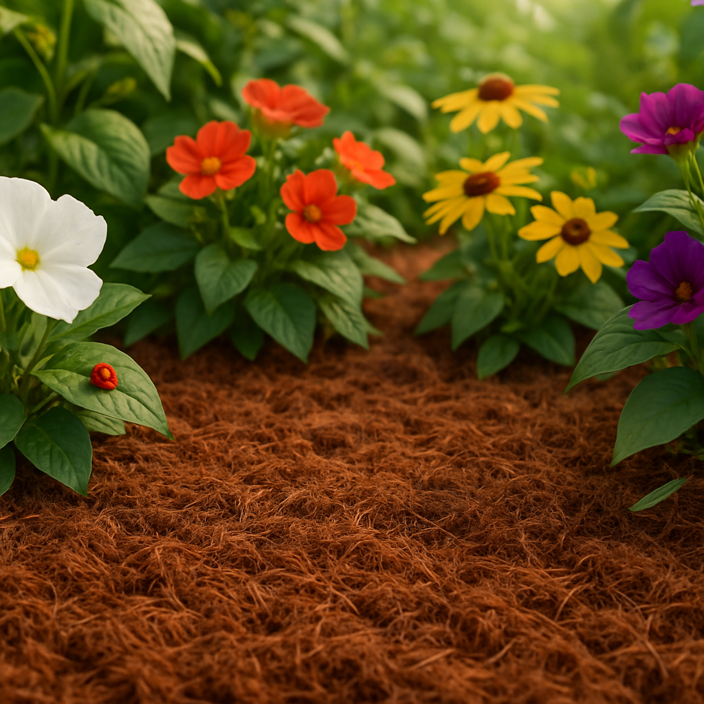

Pertanian & Hortikultura
Cocopeat adalah media tanam yang dibuat dari serbuk sabut kelapa, dikenal karena kemampuan menyerap air dan aerasi yang jauh lebih baik dibanding tanah biasa. Material ini menjadi bahan andalan bagi pekebun hidroponik, pembibitan, dan petani greenhouse yang mencari alternatif tanah yang lebih bersih dan konsisten.
Struktur cocopeat yang berserat dan seperti spons memungkinkannya menyerap dan menahan air jauh lebih banyak dibanding tanah biasa, sambil tetap menyisakan cukup rongga udara agar akar dapat bernapas. Keseimbangan ini mengurangi risiko busuk akar akibat penyiraman berlebih, sekaligus menekan frekuensi penyiraman tanaman, keunggulan besar bagi pembibitan skala besar dan sistem hidroponik yang membutuhkan kontrol kelembapan yang konsisten.
Karena cocopeat diproses dan dicuci sebelum dikemas, material ini relatif bebas dari patogen tular tanah, biji gulma, dan hama yang umum ditemukan pada tanah lapangan. pH-nya juga stabil secara alami dan mudah disesuaikan, memberi pekebun kendali yang lebih terprediksi terhadap penyerapan nutrisi, hal yang sangat penting dalam sistem hidroponik dan fertigasi di mana manajemen pH yang presisi berdampak langsung pada hasil panen.
Berbeda dari tanah yang strukturnya menurun setelah dipakai berulang kali, cocopeat dapat dibilas, diolah ulang, dan digunakan kembali untuk beberapa siklus tanam tanpa penurunan performa yang berarti. Kemampuan pakai ulang ini menekan biaya media tanam dalam jangka panjang, menjadikan cocopeat pilihan praktis bagi pertanian komersial yang ingin mengurangi biaya operasional berulang tanpa mengorbankan kualitas hasil panen.
Seiring semakin banyak pekebun beralih ke pertanian dengan lingkungan terkendali dan hidroponik, konsistensi, kebersihan, dan kemampuan pakai ulang cocopeat menjadikannya salah satu media tanam paling diandalkan saat ini.
Cocopeat bisa digunakan sendiri dalam sistem hidroponik, atau dicampur dengan tanah maupun perlite untuk berkebun dalam pot guna meningkatkan retensi air dan aerasi.
Sebagian cocopeat mengandung garam alami dan sebaiknya dibilas atau di-buffer sebelum digunakan, terutama untuk tanaman yang sensitif terhadap garam. Cocopeat dari CocoFiber diproses untuk meminimalkan langkah ini bagi pekebun.
Ya, CV Kreasi Asa Indonesia memasok cocopeat baik dalam bentuk block padat maupun loose, dikemas sesuai kebutuhan operasional hidroponik maupun persyaratan ekspor internasional.
Tertarik dengan produk ini untuk bisnis Anda?
Chat WhatsApp